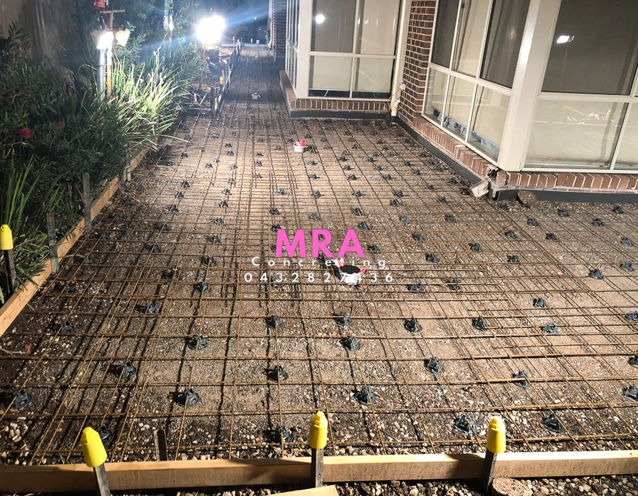

Built on Family. Built to Last.
Family-Owned Residential Concreters in Melbourne
Modern Service. Old-School Workmanship.
Specialising in exposed aggregate with 56 years experience in concreting.
Modern service. Old-school workmanship.
Family Owned & OperatedTwo generations of concreting experience and pride.
Honest & ReliableStraight-up service, clear communication and no shortcuts.
Built ProperlyFrom preparation to finish, we do the job properly.
56 Years ExperienceOld-school workmanship backed by decades on the tools.
Here When You Need UsCall Amanda on 0432 827 436.
Concrete is built on a foundation. Just like family.
MRA Concreting is a leading company in the concrete industry. Our company prides ourselves in its small family tight run Business within the two generations of our business.
With our old-school techniques, we have over 56 years experience in the concreting industry. We believe in a no shortcut approach to all jobs and a quality finish in all work.
We take pride in all our jobs and customer satisfaction is what we aim for every time.

56+Years of concreting experience
Built on Family. Built to Last.
Specialising in exposed aggregate with 56 years experience in concreting.
Recent Projects
Our Work


Let's Build Something That Lasts.
Contact us today for a free measure and quote.